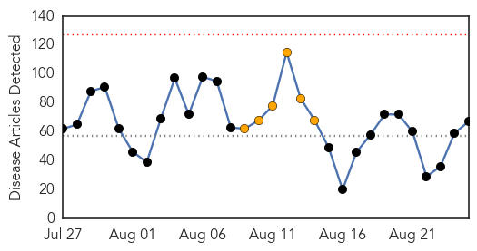
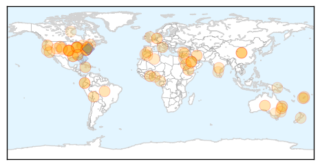

30 Day Trends
Web: 0 alerts, 6 warnings
Twitter: 10 alerts, 4 warnings
Top Articles:
- 1.000
- Why worries about a MERS virus outbreak at the Hajj are probably overblown
- 0.971
- Saudi Arabia prays MERS won’t disrupt haj
- 0.963
- barfblog
- 0.962
- South Korea confirms death of third Mers patient as health authorities close …
- 0.958
- Universal flu vaccine is no longer science fiction. Scientists report major step in development.
- 0.950
- Why all the news about Legionnaires' disease?
- 0.924
- We've almost eradicated guinea worm
- 0.917
- Chicago Tribune
- 0.917
- Chicago Tribune
- 0.917
- Chicago Tribune
- 0.917
- Chicago Tribune
- 0.917
- Chicago Tribune
- 0.917
- Chicago Tribune
- 0.917
- Chicago Tribune
- 0.917
- Chicago Tribune
- 0.917
- Chicago Tribune
- 0.917
- Chicago Tribune
- 0.917
- Chicago Tribune
- 0.917
- Chicago Tribune
- 0.917
- Chicago Tribune
- 0.917
- Chicago Tribune
- 0.907
- 250 wanted for tuberculosis testing after Alabama student tests positive
- 0.884
- barfblog
- 0.867
- Tularemia Deadly, Unusually Active In Wyoming This Year
- 0.866
- Brazil money launderer testifies former presidential candidate took bribe
- 0.863
- WHO Steps Up Health Response in Yemen as Humanitarian Situation Worsens
- 0.854
- Riyadh leads in MERS infectionsHealthcare
- 0.843
- Calicivirus killing pet rabbits in Adelaide’s south
- 0.824
- Physician traces typhus cases in Galveston area
- 0.820
- Mono Cases Pop Up at Benton Elementary
- 0.771
- DEPARTMENT OF INFORMATION FIJI NEWS SUMMARY 25/08/15 4:30PM
- 0.766
- WCU says buildings safe from legionella bacteria
- 0.759
- E. coli bacteria make 24 people ill in Canada
- 0.739
- TRS Govt Directs Officials to Adopt WHO Guidelines
- 0.733
- BLM confirms Mesa Colorado woman infected with Tularemia
- 0.729
- The Caledonian-Record
- 0.727
- One Dies of Diarrhoea, Condition of 10 Critical
- 0.690
- Denver Fluoride Fight Pits Activists Against Long-Standing Health Policy
- 0.679
- Gibraltar accuses Spanish officers of firing at fishermen
- 0.679
- Help arrives as Washington battles record breaking wildfires
- 0.679
- IS group releases photos of Palmyra temple ‘destruction’
- 0.679
- Spain, Morocco arrest 14 suspected of recruiting for Islamic State group
- 0.679
- Shooting at travellers' camp in France leaves four dead
- 0.679
- IS group claims gay killings as UN meets on anti-LGBT violence
- 0.679
- Iranian biopic on Prophet Muhammad sparks anger
- 0.679
- French prosecutor says train gunman had ‘terrorist intent’
- 0.679
- Jihad suspects in France deny 'terrorism' label
- 0.662
- Africa Reports Huge Losses From Pests
- 0.651
- UCH takes HPV vaccination to rural areas
- 0.643
- Recreational users of the Russian River are encouraged to take precautions
Showing top 50 articles...
Top Tweets:
- 0.884
- RT: ICEID NEWS SCAN: MERS vs SARS, respiratory syncytial virus in the NICU, extended flu vaccine protection http://t.co/8eZySNzQdo
- 0.766
- RT: The Saudi MERS toll as of 24Aug: 1154 cases w/ 492 deaths 592 recovs 70 in care In last 24 hrs 7 new cases 5 deaths h…
- 0.617
- RT: Boy, the MERS outbreak in Riyadh is getting big. +8 cases, +6 deaths. So many older patients; deaths could climb. http…
- 0.550
- Boy, the MERS outbreak in Riyadh is getting big. +8 cases, +6 deaths. So many older patients; deaths could climb. http://t.co/Au9CdlvjSm
- 0.548
- When a hospital ER has undetected MERS spread, look what happens. @WHO describes cases infected in a Riyadh hospital http://t.co/q9HH3UZaCZ
- 0.539
- RT: Una dieta rica en realidades y baja en expectativas para eliminar sobrepeso de obligaciones.
- 0.503
- RT: Todas podemos abrir el frasco de mermelada solas, es todo una puesta en escena para ustedes
Web/News Articles
Tweets

Article Locations
Article Confidences